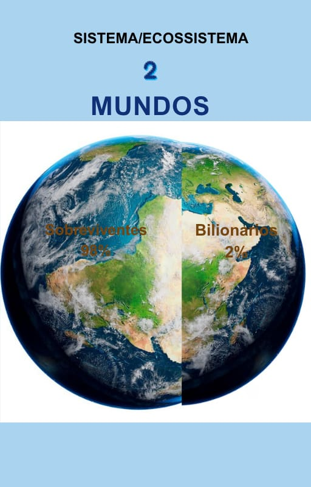

Sistema/Ecossistema: 2 Mundos
Gilberto (Luzidio Smith) acredita que toda pessoa possui um potencial que, muitas vezes, apenas precisa ser despertado. Natural de Barra do Corda (MA), encontrou em sua própria história de vida a inspiração para compartilhar princípios de fé, responsabilidade e desenvolvimento humano. Em 27 Dias – Letra por Letra, convida o leitor a percorrer uma jornada de reflexão e crescimento, mostrando que pequenas mudanças diárias podem transformar a forma de pensar, agir e viver. Seu propósito é caminhar ao lado das pessoas, incentivando-as a crescer, servir e construir um legado que faça a diferença.